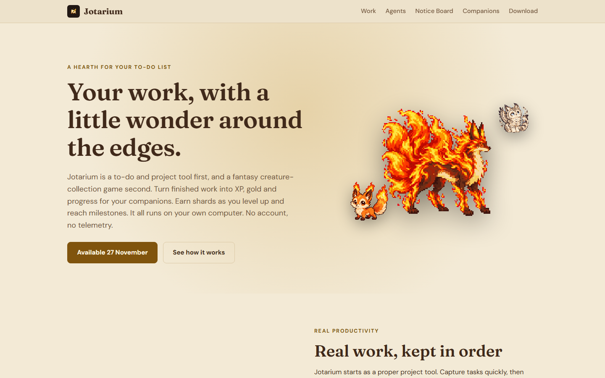
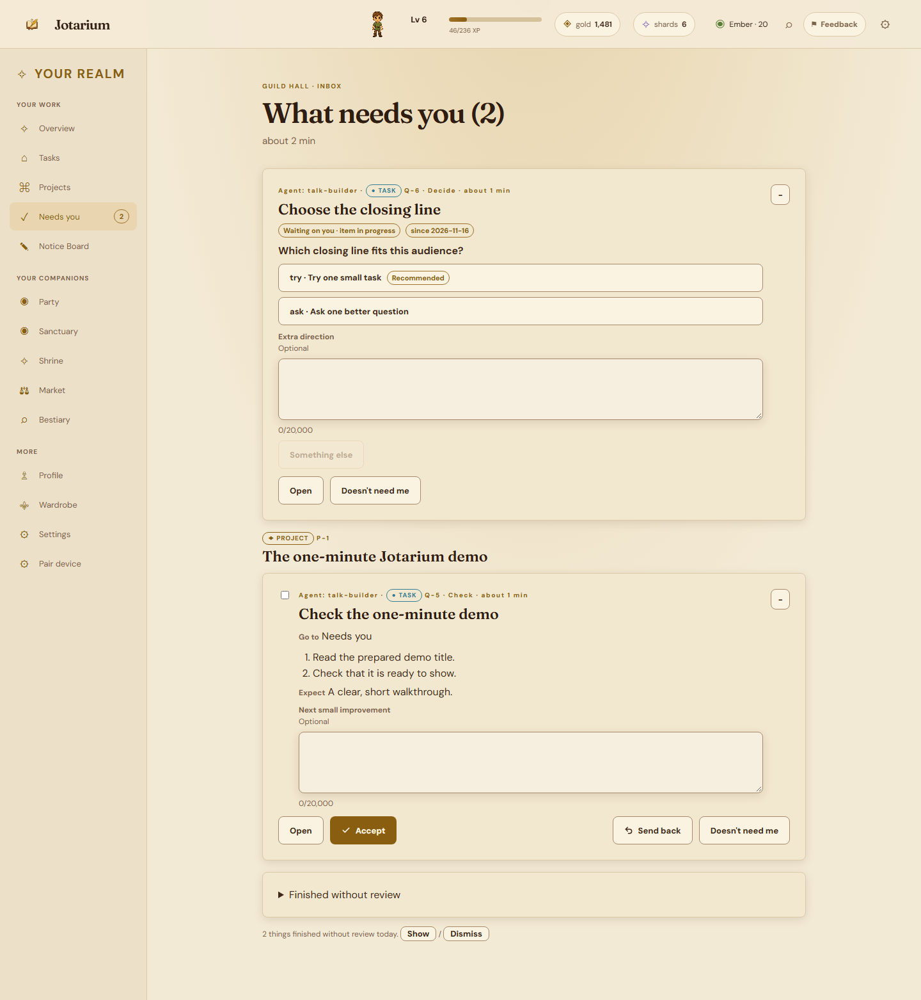
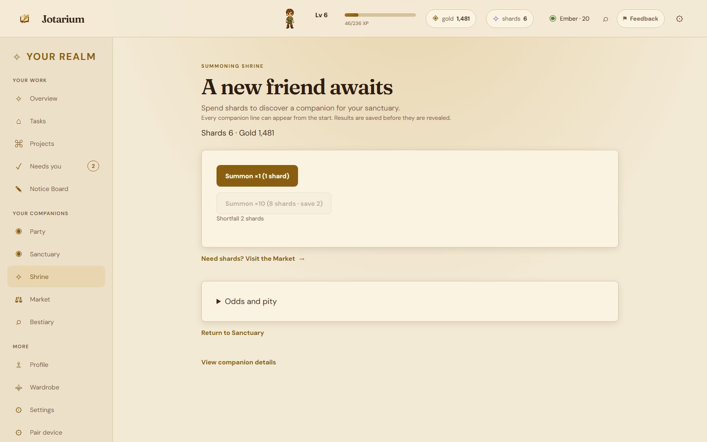
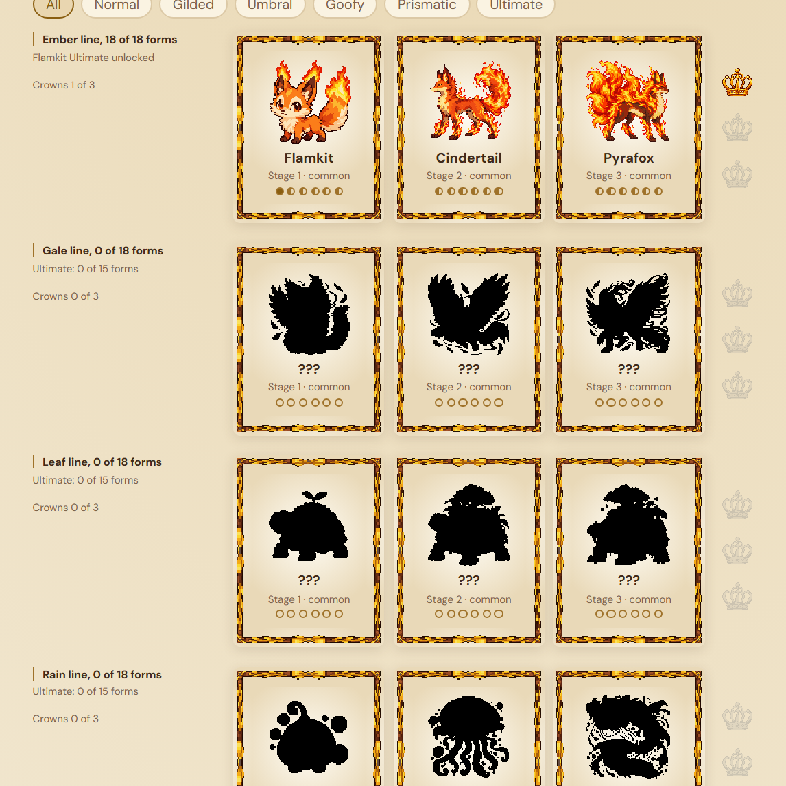
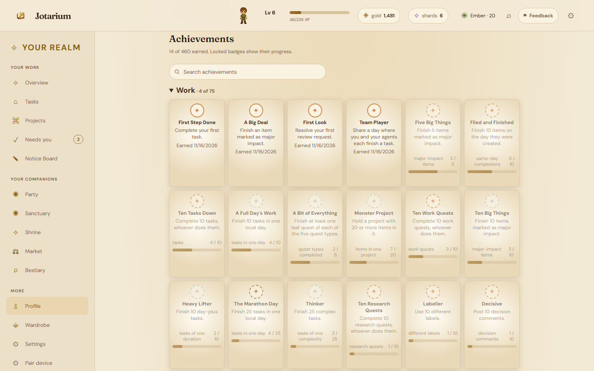
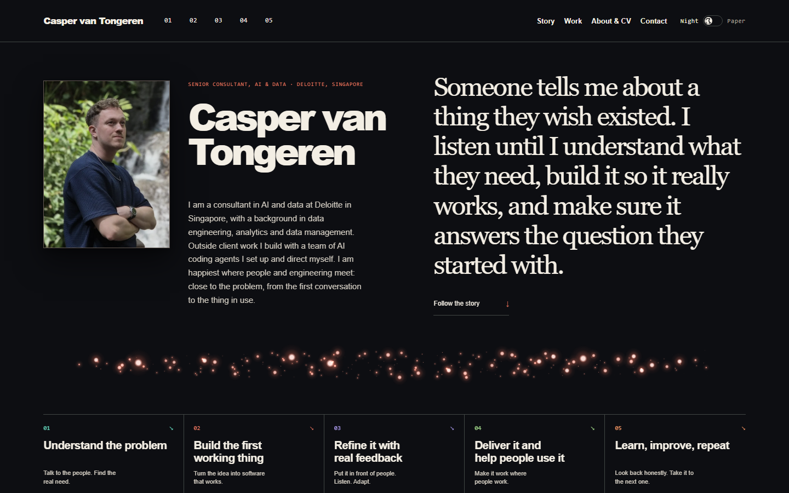

Building with a team of agents
The tooling and skills that sustain an in-control, hyper efficient and effective agentic building ecosystem.
Casper van Tongeren
Agentic builders · 27 November
1 / 17
The incident that started it all
Me
"Make a work package for OpenCode. Read the Obsidian graph for context."
→
Codex
"On it."
Then silence.
→
Black box
25 min
No updates
→
Codex
"Done."
A glowing report
→
The truth
Codex's 5-hour window was gone. It re-read the repo, called OpenCode, OpenCode failed, and did it all itself.
Nothing coordinated. Nothing remembered.
5 h
Codex's frontier window, spent
100
documents re-read from the archive
0
tasks done by OpenCode, with 97% left
2 / 17
One tool for each missing piece
Coordination
hx
Dispatches work and reports back.
sessions are
captured
Memory
agentmem
Captures every session and keeps one page current.
progress
feeds memory
Attention
Jotarium
Tracks the work and talks to agents over MCP.
hx reads the board to pick work · workers write progress back
79 skills on every agent
One shared layer of playbooks, checks and rituals.
58 from pstack
10 adopted from others
11 written from our own lessons
3 / 17
hx turns a request into a brief and a route
It runs in Herdr, where every agent works in its own terminal.
Brief
Route
Build
Review
brief.md
written by the lead
goal
What the work must achieve.
files it may touch
The only paths the worker may write.
the command that proves it
The check that must pass before review.
A file survives a handoff. A conversation does not.
hx decides
Worker
from strengths
Model
from the task
Effort
from difficulty
Quota
live, per subscription
The brief is the input. The route is the decision.
4 / 17
Nobody checks their own work
Brief
Route
Build
Review
Lead
Claude + hx
Write the brief, create the worktrees.
Isolation
Worktrees
One per worker. No shared files.
Worktree A
Devin
Builds the change.
Worktree B
DeepSeek
Builds the change.
Review
Codex
Another family. Finds the faults, sends them back.
Prove + merge
Claude
Runs the real app, then merges.
5 / 17
agentmem carries the work forward
Capture
Every session is captured automatically.
→
Consolidate
A short project page keeps what is true now.
→
Resume
The next agent reads one page, not the archive.
6 / 17
Meet Jotarium
My task and idea tracker that is also a game — the shared workspace where the agents and I meet.
Where ideas grow and adventures unfold. Everything on this board — tasks, ideas, companions, badges — is the same world the agents read and write over MCP.

jotarium.com — free for Windows and Mac
jotarium.com
7 / 17
Jotarium brings me only what needs me

Before
Read these 99 documents.
After
Prepare the portfolio preview
Where: Jotarium → Tasks → Launch the portfolio site
1. Open the portfolio project.
2. Read the task titles and statuses.
3. Look for finished work and clear next steps.
Expect the project is easy to scan.
Accept Doesn't need me closes the card, keeps the XPjotarium.com
8 / 17
Work worth coming back to



Summon
Collect
Celebrate
jotarium.com
9 / 17
Jotarium is where the agents and I meet
My side
Me
Dump ideas
Read the board
Answer what needs me
writes and reviews
Shared workspace
Jotarium
Ideas, projects, features, tasks
The board and Needs you
MCP for every agent
over MCP
Their side
Agents
Create and update work
Write progress
Pick up what is next
progress feeds memory
Memory
agentmem
The progress Jotarium tracks becomes memory.
jotarium.com
My phone
Meta Muse
Captures an idea the moment I say it.
Private inbox
Cloudflare
A Worker with an add-only token. Idea text only.
collects every 3 h, read-only
10 / 17
The skills that tie everything together
One shared set of skill files. Claude, Codex, DeepSeek and Devin all read the same ones.
Rituals
How a session runs
Kickoff, away, catch-up, rant. The same shape every time.
Playbooks
How work gets done
Bug fix, feature, review, verify. Each agent follows the same steps.
Memory
What we decided before
Searched before anyone guesses, and updated when a session ends.
Change a skill once, and every agent works the new way.
11 / 17
Every session has the same shape
/kickoff
Loads the way of working and picks the work.
/afk
Keeps going while I am away, with proof.
/catchup
Tells me what landed and what waits on me.
/rant
Turns my questions into claims the team settles.
12 / 17
Learning from the greats
"Prove it on the real thing"
Lauren Tan
"Stay out of the dumb zone"
Matt Pocock
"Ask for bigger work"
Theo Browne
"Let the metric decide"
Andrej Karpathy
"Aim at the goal beyond"
Felix Rieseberg
"Explore loose, ship strict"
Simon Willison
"Own the last 30%"
Addy Osmani
68 of their methods, each checked against 14 days of our own logs.
13 / 17
Every failure makes the system better
Notice
Record
Fix
Verify
Two agents broke each other's runs.
The lesson goes into memory.
One rule. One worktree per worker.
The next run proves it.
The fix is a rule the tool enforces, not a promise to be careful.
14 / 17
What this team built
The tools
hx
agentmem
Jotarium
79 shared skills
1,074
commits in the last 30 days, across 11 repositories
From git history, measured 14 November 2026.

One example of what this setup built
casper5253.github.io
15 / 17
The loop, live
One /kickoff session, from picking the work to capturing the memory.
01
/kickoff
Loads the way of working. Starts the team.
Team
→
02
Jotarium picks
The next task, from the board.
Jotarium
→
03
hx routes
Worker, model, effort, live quota.
hx
→
04
Workers build
In parallel, each in a worktree.
Worktrees
→
05
Another family reviews
Never the author's model.
Review
→
06
Jotarium updated
Progress and a review card.
Jotarium
→
07
agentmem captures
The session becomes memory.
agentmem
16 / 17
Jotarium
Where ideas grow and adventures unfold.
jotarium.com
Free for Windows and Mac
These slides
casper5253.github.io/talk
linkedin.com/in/caspervtongeren
17 / 17